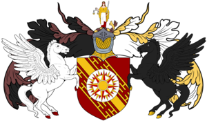
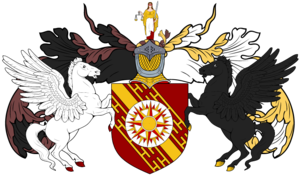

The City of Auchburly welcomes you! We hope to become a premier trading city within the Kingdom of Alesia and it's southern
neighbor, Bordweall. The purpose of this website is to give a brief introduction to the City of Auchburly, it's mission and mayor.
Our city statistics are to the right. While Auchburly is primarily a fishing town, it is our long term goal to expand our purpose
and become the premier trading city within the Kingdom of Alesia.
General information about Chronicles of Elyria can be found in the links below:
View the latest news about Chronicles of Elyria
 
